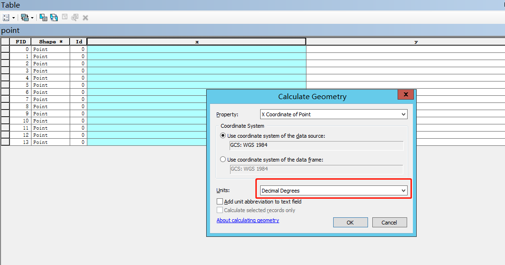

原文连接:https://www.cnblogs.com/ixzll/p/11534542.html
这里先给大家介绍几个坐标系：
1.WGS84：国际坐标系，为一种大地坐标系，也是目前广泛使用的GPS全球卫星定位系统使用的坐标系。
2.GCJ02：火星坐标系，是由中国国家测绘局制订的地理信息系统的坐标系统。由WGS84坐标系经加密后的坐标系。
工作中有时需要将shape数据转换成高德坐标数据，由于目前数据大部分都是WGS84国际坐标系，因此需要通过使用高德地图提供的API将84坐标转换成GCJ02即火星坐标系。
第一步：准备数据
方法1：
从shape图上随机提取一些点，根据shape图形大小提取，如果图形较大，建议多提取一些。一般在拐点和图形的四周均匀选择。
点提取完成后获取坐标点的经纬度值。可以使用Arcgis的计算工具获取x,y值。画红框的地方需要注意，要选择十进制表示的经纬度。


坐标提取完成后新建一个excel表，将x,y值分别复制黏贴在excel表中的前两列。
方法2：
将shape数据存入postgresql，并使用postgis提供的函数随机从shape上提取点，并取出其x,y值。此方法是随机选择，因此选择的点未必均匀分布在图形四周和拐点处。
1 SELECT ST_X(geom), ST_Y(geom) from(
2 SELECT
3 (ST_Dump (ST_GeneratePoints (nanjing.geom, 20))).geom AS geom,
4 md5((random()*random())::text) as id,
5 random()*1000 as val
6 FROM nanjing where name = '浦口区')
7 k1第二步：执行下面的python代码调取高德API进行坐标转换
1 import xlrd
2 from xlutils.copy import copy
3 from urllib import request
4 import json
5
6
7 class ToGd():
8 def __init__(self, key, coordsys='gps', output='JSON'):
9 self.key = key # 高德应用的key
10 self.coordsys = coordsys # 原坐标系，默认选择gps，此处实际对应4326的坐标系
11 self.output = output # 设置高德api数据返回类型，可选JSON和xml
12 self.file_path = input('请输入你的文件路径') # 获取文件路径，即上面新建的excel文件名称
13
14 def split_li(self, locations_li):
15 # 拆分坐标列表
16 li = list()
17 for location in locations_li:
18 location_li = location.split(',')
19 # print(location_li)
20 li.append(location_li)
21 # print(li)
22 return li
23
24 def locations(self):
25 # 读取文件中的数据并返回locations字符串及原坐标列表
26 f = xlrd.open_workbook(self.file_path)
27 index = f.sheet_names()[0]
28 sheet = f.sheet_by_name(index)
29 nrows = sheet.nrows
30 data_str = ''
31 old_locations_li = list()
32 for i in range(nrows):
33 if i == (nrows - 1):
34 data_li = str(sheet.row_values(i)[0]) + ',' + str(sheet.row_values(i)[1])
35 else:
36 data_li = str(sheet.row_values(i)[0]) + ',' + str(sheet.row_values(i)[1]) + '|'
37 data_str += data_li
38 old_locations_li.append(sheet.row_values(i))
39 return data_str, old_locations_li
40
41 def make_response(self, locations):
42 # 构造请求url，并获取响应数据，返回拆分后的坐标列表
43 url = 'https://restapi.amap.com/v3/assistant/coordinate/convert?locations=%s&coordsys=%s&output=%s&key=%s' % \
44 (locations, self.coordsys, self.output, self.key)
45 # 返回值为json
46 resp_json = request.urlopen(url)
47 # json转换成字典
48 resp_dict = json.loads(resp_json.read().decode())
49 # 提取转换为高德坐标后的坐标
50 locations_str = resp_dict.get('locations')
51 # 字符串分割
52 locations_li = locations_str.split(';')
53 new_locations_li = self.split_li(locations_li)
54 return new_locations_li
55
56 def save(self, old_locations_li, new_locations_li):
57 # 保存成excel或txt文件
58 # new_file = copy(f)
59 # new_sheet = new_file.get_sheet(0)
60 # for m in range(len(locations_li)):
61 # for n in range(len(locations_li[m])):
62 # new_sheet.write(m, n + 2, locations_li[m][n])
63 # file_path = self.file_path + '2'
64 # new_file.save(file_path)
65 file_path = 'result.txt'
66 with open(file_path, 'w', encoding='utf-8')as f:
67 for m in range(len(new_locations_li)):
68 # for n in range(len(new_locations_li[m])):
69 f.write(str(old_locations_li[m][0]))
70 f.write(' ')
71 f.write(str(old_locations_li[m][1]))
72 f.write(' ')
73 f.write(str(new_locations_li[m][0]))
74 f.write(' ')
75 f.write(str(new_locations_li[m][1]))
76 f.write('\n')
77
78 def run(self):
79 data_str, old_locations_li = self.locations()
80 new_locations_li = self.make_response(data_str)
81 self.save(old_locations_li, new_locations_li)
82
83
84 if __name__ == '__main__':
85 test = ToGd('154c586add07ef456b90b079935f47a4') # 输入高德应用的key，实例化对象
86 test.run()代码由我自己编写，水平不高还请理解。
执行上面的代码需要申请高德应用的key，相关申请方法可查看https://lbs.amap.com/dev/key
代码执行完成后会在本地生成一个result.txt的文件，下面需要用这个文件做空间校正。
第三步：空间校正
在Arcgis中对需要做坐标转换的数据开启编辑功能，打开空间校正工具栏，输入连接文件。连接文件即第二步得出的result.txt文件。
可以点击View Link Table查看误差值，如果误差值太大，需要重新做连接文件。
选择需要校正的数据。
点击校正。

校正完成后即可得到与高德地图匹配的shape数据。
上述方法只能用于小范围测试使用，未做精度评估。如需大规模商业化使用，还需再想别的方法。